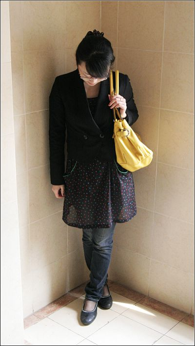

杂七杂八 @ Apr 07, 2009
这是“蒿茶”，南京特产“芦蒿”，知道吧？就是芦蒿制作成的泡水喝的茶叶。可惜这是最后一点蒿茶。节前去音像店买DVD，盯着店家杯子里碧绿的茶水看了好一会儿，店家是个慈眉善目的女人，比我大一岁，看我研究她的茶水，就送了我一袋尝鲜。

前后买了《嫌疑人X的献身》的书和DVD。按照经常把困难放在最后解决的习惯，当然先看的是DVD了。里面的配乐很好听，日剧里的女主角长着一根奇怪的鼻梁，做作的大学教授以及执着闷骚的高中数学老师....按照星座来看水瓶最最具有好奇心，有探宝寻奇的嗜好，所以类似推理剧情的电影最适合水瓶座人观看。

犹豫是否要持续“街拍”秀，还是随便点儿好，想拍就拍，没心情就不拍好了。当今天得知唱《叶子》的台湾歌手34岁阿桑患乳腺癌去世的新闻，越发坚定每一天都要尽力在快乐中度过的愿望。
喜欢这只包包柔软的质感，它其实不是淡黄色而是明亮的鹅黄色，与春日的氛围很搭。上班用可惜了，很快就会脏的。

16 Responses to “杂七杂八”
2009-04-07
书太好了，电影就没办法超越
2009-04-07
包包不错啊~~喜欢！
2009-04-07
你喜欢喝“蒿茶”？周末去了金湖，看见那里的特产就是“蒿茶”，原本想买点，但却告知不好喝。如果我下次去，一定帮你买点~~~
2009-04-07
找天气好的周末帮你街拍啊？
2009-04-07
我学茶这么多年还是第一次看到这样的非茶之茶
你也送点我尝鲜吧
嘿嘿
2009-04-07
这个颜色的包包确实比较容易脏的，呵呵，你这一身打扮，看上去年轻很多。
2009-04-07
这个“非茶之茶”等我弄到再说吧~
2009-04-07
赞最后一张
2009-04-07
莫不是楼上知道我在哪家店买碟？还是告诉我我有39岁啦，呵呵~
2009-04-07
喜欢茶脚上穿的鞋子：）
2009-04-07
这园子里人气好旺，俺忍不住来看看今天谁来了，呵呵！
2009-04-07
Cindy，那鞋是ECCO的，今年出新款了，有紫色和棕色，试穿过，挺舒服的，平底，推荐你去看看。
2009-04-08
LZ这包很靓
2009-04-09
从“茶“里品出了摄影的乐趣.自己原来拿着相机是在“照相”!请教christina碟和书的那张照片是怎么拍出来的?
一个菜鸟在提问
2009-04-10
碟和书就用普通的拍照方式拍就好了，没什么技巧。
2009-04-11
芦蒿茶我们公司有啊。。要多少有多少。。
Leave A Reply
存档只读，评论已关闭。